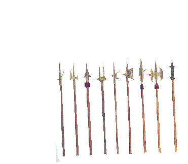

One of your more
primitive options are
Pikes.

Our pikes are some of the best
around. They are tough, lightweight, and highly effective against an
army of squirrels that attack through a small hole. Best if they attack
through mouse holes and knocked out doorknobs.
Pikes are completely useless when facing an infestation of more than 2
squirrels.
If you feel this package has any use at all for you, please order now
and waste your money on a sharp stick.
Just call 1(800) BAG-EMUP
or go back to our main page.